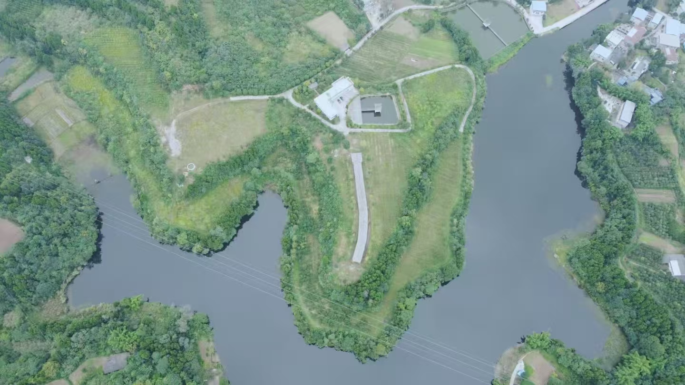
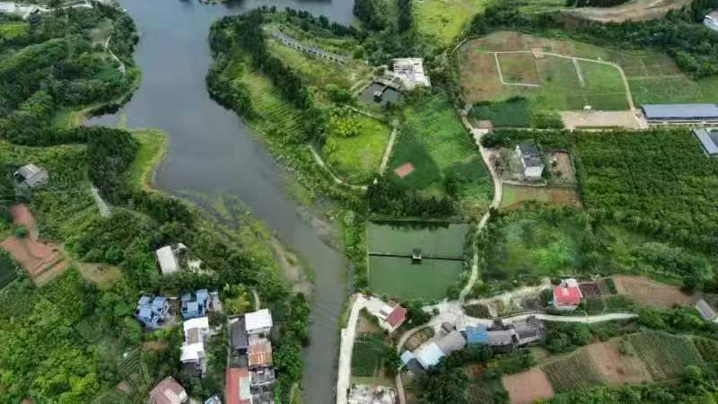
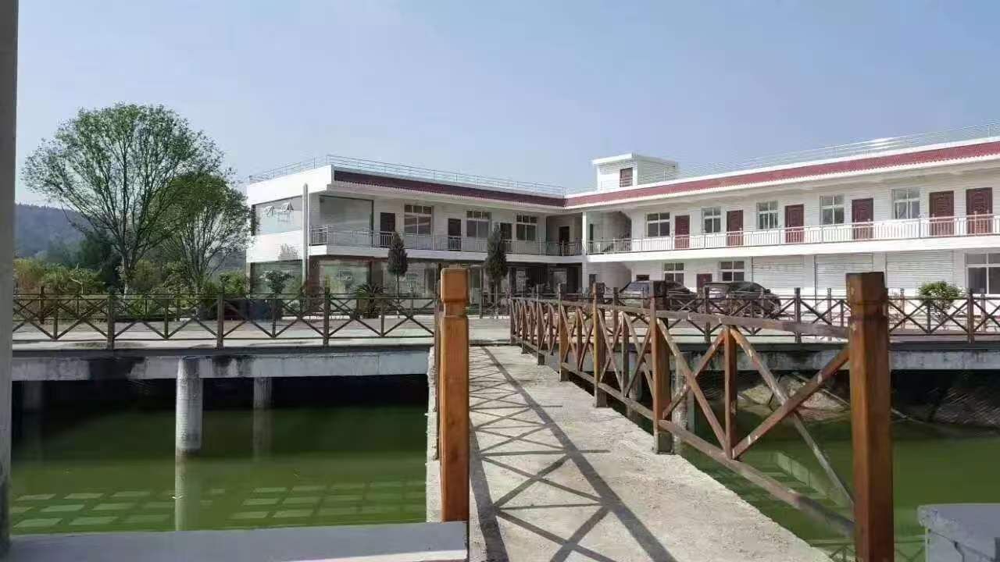

四川阆中 · 杨家沟
白天在古城，
夜里在水边。
沃谷农庄在杨家沟的一道山脊上，三面是三八水库，离阆中古城大约七公里。一天分两半过：白天花在城里，晚上回到水边吃饭、歇脚。
看得到山水，听得到蛙鸣。




- 距古城约七公里
- 三面环水库
- 蓝莓已经挂果

壹 · 白天
古城的半天
阆中是一座两千三百年的城，嘉陵江从旁边过。山围四面，水绕三方，城里的人把它叫做风水古城。张飞庙、贡院、状元坊，还有落下闳和春节的来处，都在这半天里。
农庄不把古城搬进园子。路留得短，白天花在城里就够了。
壹 · 夜里
水边的一晚
回到杨家沟，水库就在坡下。可以沿岸走走，钓一钓，吃一顿用园里东西做的饭。蓝莓是二零一二年前后种下的，树已经结果。
夜里这里暗。蛙在水边叫，城的热闹留在七公里之外。
贰
农庄上能做的事
都是现在走得到、吃得到的。季节和人数，来之前问一声。
-
水
三八水库围着山脊的北、南、西三面。园里原有鱼塘，可以坐下来钓。活鱼是这里本来就有的吃法。
-
食
一顿农家饭，材料和水库、果园有关。家里人或三五朋友要聚一顿，提前说一声，厨房按人数准备。
-
田
蓝莓和早年种下的果树已经挂果。采摘看季节，不是天天都开。来之前问一句当令的是什么。
-
童
坡不高，水边有地方走。适合带孩子来过完整的一天，而不是把他们放进一套游乐设备里。


水入画中，画落梦中。
叁
城里的几处
只写几处和这一天对得上的。门票和开放时间，以古城现场为准。
-
古城的街道
城跟着山水走。白天先在街上走一走，晚上再回到水库边，两处的安静不一样。
-
桓侯祠
张飞在阆中驻过七年。祠在城里，是三国这一路最清楚的一站。
-
贡院与状元坊
阆中出过状元，考棚和牌坊还在。农庄只借这城里的一口气，不在园里另造一座贡院。
-
落下闳
太初历在这里把正月初一定成一年的开始。春节是这座城自己的事。
-
保宁醋，张飞牛肉
城里吃这些。回到农庄，再吃一顿园里和水库的。
-
华光寺
近处仍有人去上香。顺路可以走走。农庄不办香火。
肆
食与宿

现在能约的
来访、吃饭、垂钓，以及当季的采摘。人不多的时候最合适。这是一处安静的山脊，不是一座天天挤满的景区。
还要等农庄点头的
住一夜、搭帐篷、办一场坝坝宴。日子和间数还没有对外。确定之后，再写进这页。
怎么约
用电话或微信。号码业主定了之后，放在页首和这里。
电话 · 待填
微信 · 待填
伍
怎么来
从康美大道转入去杨家沟的乡村路，最后一段是乡间小路。城里的公交到不了门口。自己开车，或从古城约一辆车，比较稳妥。
- 广元、巴中、南充
- 自驾大约一个小时
- 绵阳
- 自驾大约两个半小时
- 成都
- 自驾大约三个小时
- 重庆
- 自驾大约三个半小时
车位有限。几辆车一起来，先打个招呼。时间是规划里的大概车程，不是导航承诺。